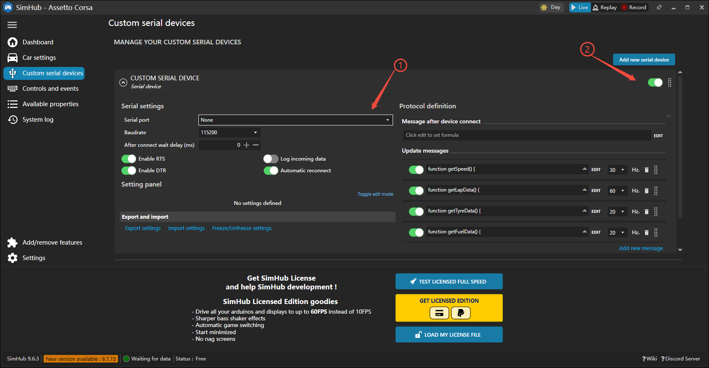

固件更新(v1.0.5及以上)
1打开小程序,进入Race菜单->切换到模拟器模式,设备会自动重启.
2原声浪可视化|仪表盘 功能,变更为simhub游戏模式
功能,变更为simhub游戏模式
步骤一
1 下载 并安装SimHub
2 添加插件(Add/Remove features)->自定义串口设备(Custom serial devices)
步骤二
1 添加一个新串口设备(Add new serial device)
步骤三
1 下载压缩包,解压出speedim.shsds配置文件.
2 导入设置(Import settings),选择上一步下载的speedim.shsds文件.
步骤四

1 选择串口(Serial port)下拉框->出现2个
2 开启设备开关